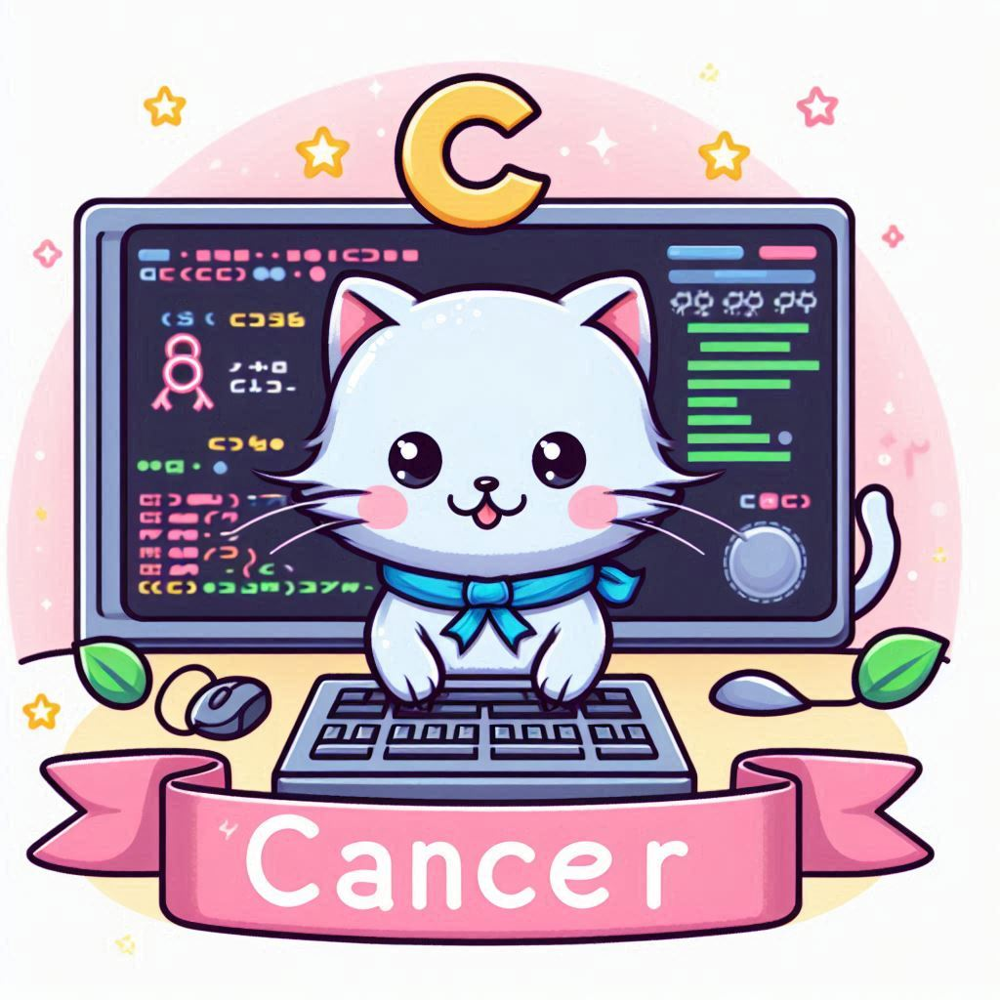

This month, your intuition and creativity will be your greatest assets in your coding endeavors. As a
Cancer, your empathetic nature and imaginative mind make you a unique and valuable contributor in
the world of programming.
Your coding projects may require you to tap into your emotional intelligence and problem-solving
skills. Trust in your ability to navigate even the most complex challenges with your natural
sensitivity and insight. Approach debugging and testing with a thoughtful and patient mindset, and
you'll discover innovative solutions.
Learning and Development
This month is perfect for diving into new programming languages or technologies. Take advantage of
online courses and tutorials to expand your skill set. Your intuitive grasp of new concepts and your
creative approach to problem-solving will help you quickly apply what you learn.
Personal Growth
Your nurturing and persistent nature will be your greatest strengths in your coding projects this month.
As a Cancer, you are known for your dedication and ability to persevere through challenges. Stay focused
and trust in your ability to find effective solutions to any obstacles you encounter.
Collaboration will be particularly beneficial this month. Working with others can lead to innovative
ideas and solutions. Don’t hesitate to share your insights and seek feedback from your peers.
While you immerse yourself in coding, remember to take breaks and prioritize self-care. Balancing work
with relaxation will help you maintain your productivity and creativity. Incorporate mindfulness
practices or short walks into your daily routine to stay refreshed.
Career
Your career prospects in coding are looking bright this month. Your dedication and meticulous attention
to detail will not go unnoticed. Take the opportunity to work on projects that showcase your unique
skills and creativity. This is also a great time to seek feedback and make improvements. Networking with
colleagues and industry professionals can open doors to exciting new opportunities.
Lucky days for coding: 3rd, 11th, 20th
Power color: Soft Blue
Embrace the challenges and opportunities that come your way this month, and let your coding skills shine
bright!